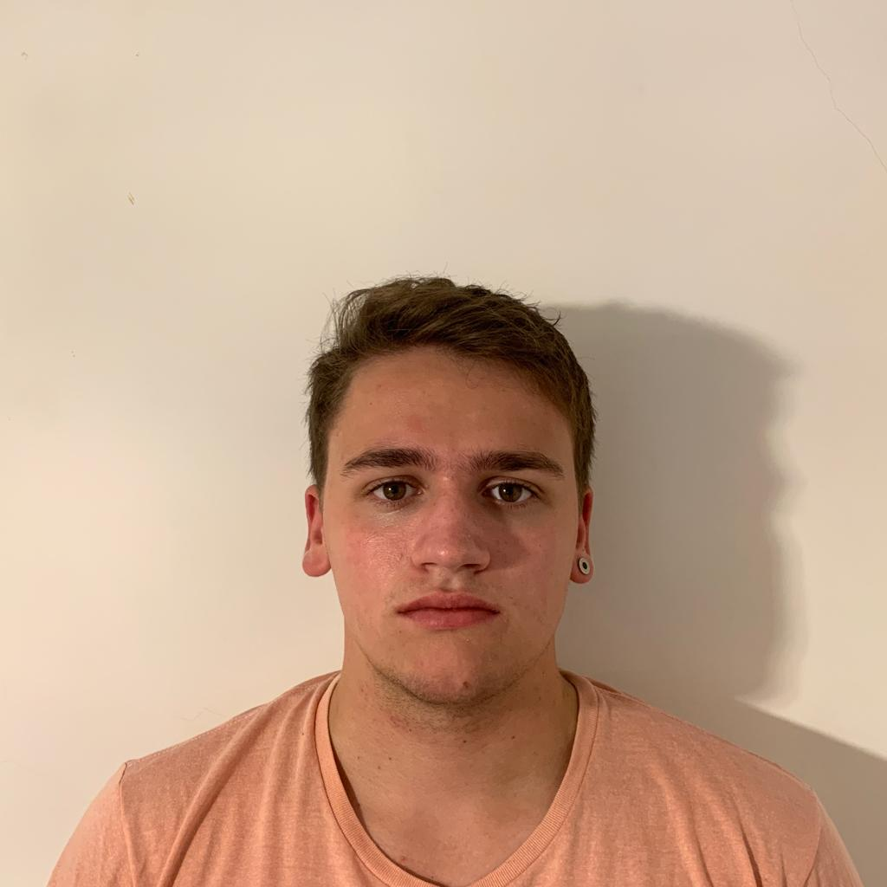
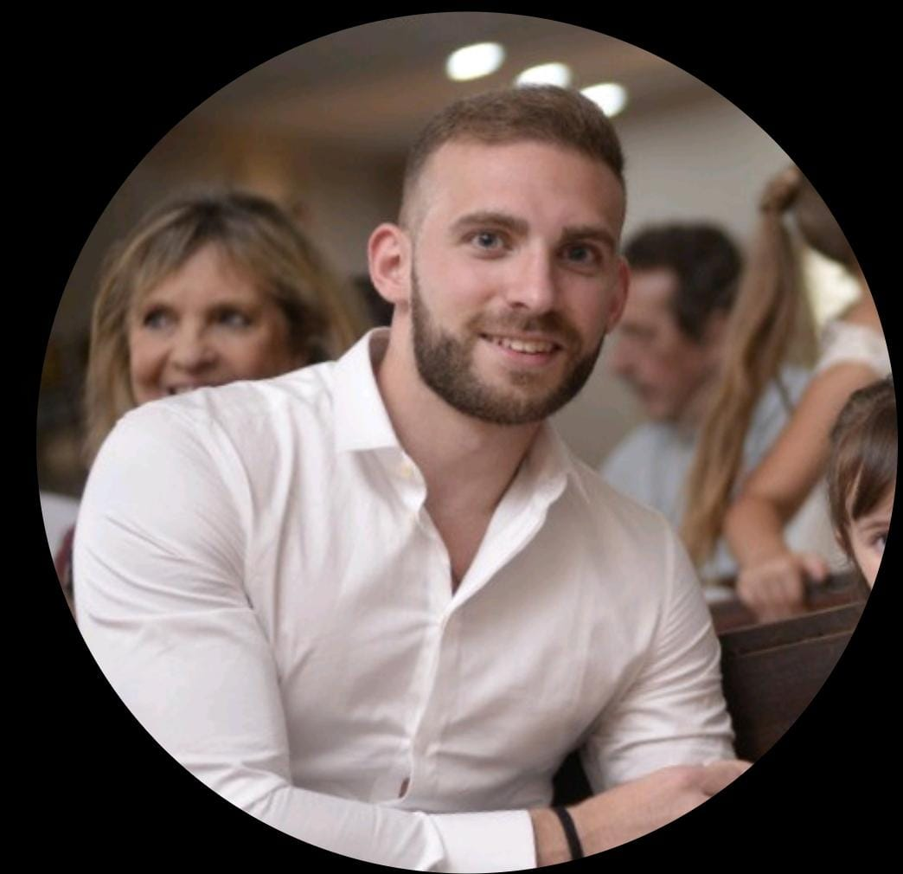
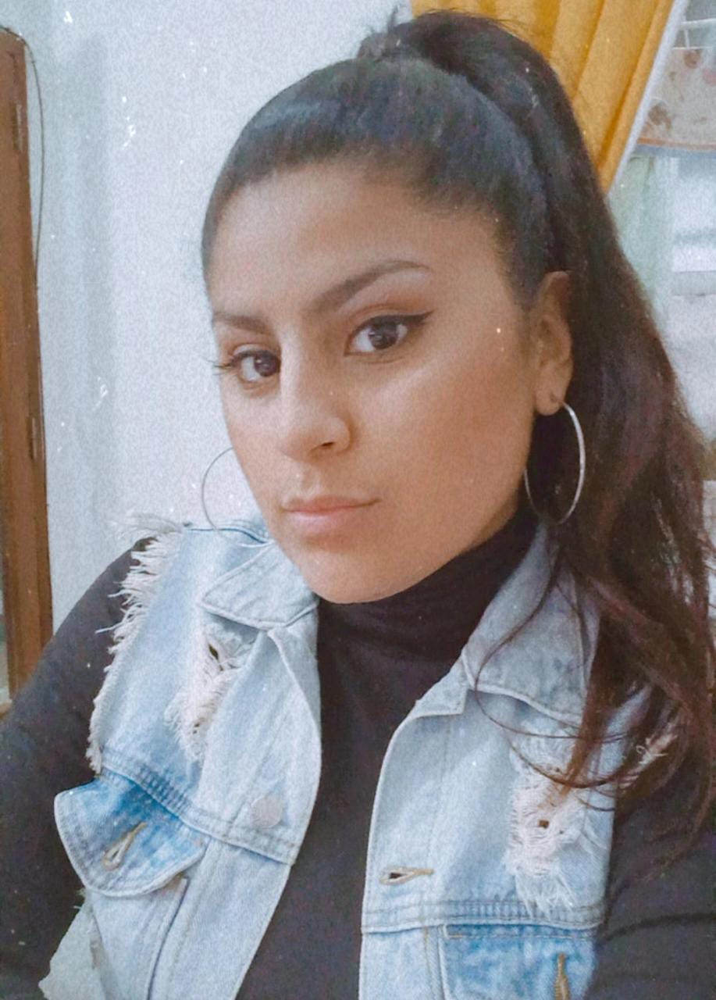

Integrantes
Tomas Bianchi
- Nombre: Tomás
- Apellido: Bianchi
- Contacto: tbianchi@uade.edu.ar
- Celular +54 1149696143
- Lenguajes: HTML, CSS y SASS o SCSS
- Idiomas: Ingles avanzado
- Se usar programas de edicion de video, tengo conocimientos musicales, se programar el "Front End" de una pagina web.
- Fortalezas: Curiosidad y busqueda de opciones diferentes para un problema.
- Debilidades: pocas ganas de mantener un orden y desconcentracion constante.
Luciano Auad
- Nombre: Luciano
- Apellido: Auad
- Contacto: luauad@uade.edu.ar
- Conocimientos de programación básica en HTML y Python
- Conocimientos de diseño
- Fortalezas: Organizado
- Debilidades: bajo conocimiento en programación
- Idiomas: Inglés (Avanzado), Alemán (Básico)
- Hobbies: Natación equipo master Ferrocarril Oeste
Ramiro Abadie
- Nombre: Ramiro
- Apellido: Abadie
- Contacto: rabadie@uade.edu.ar
- Conocimientos: básico, C python
- Hobbies: Entrenar
- Fortalezas: Organizado
- Debilidades: Me cuesta arrancar a trabajar
- Idiomas: Inglés
Florencia Daiana Amaya
- Nombre: Florencia Daiana
- Apellido: Amaya
- Contacto: floamaya@uade.edu.ar
- Conocimientos de programación básica Pseudocódigo, C++, Python
- Conocimientos de diseño nivel básico de Apple
- Conocimientos de coomunicación de redes sociacles, redacción de textos
- Idiomas nivel de inglés medio y Alemán básico
- Hobbies: Leer, escribir, cantar, sacar fotos, hacer programa de radio
- Fortalezas: Organizada, detallista, adaptable a ideas, responsable, iniciativa de aprendizaje.
- Debilidades tiendo a ser lider sin ser mandona.